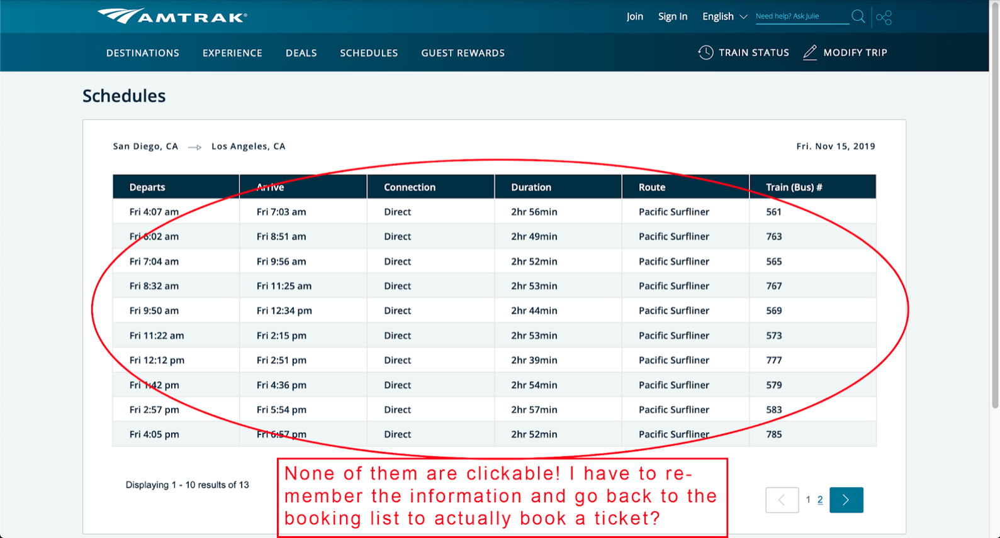
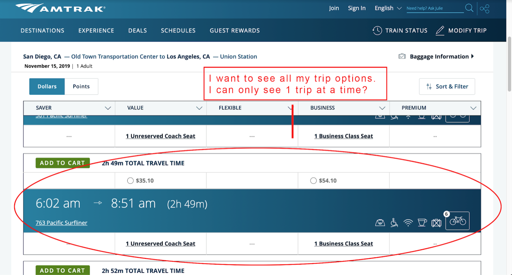
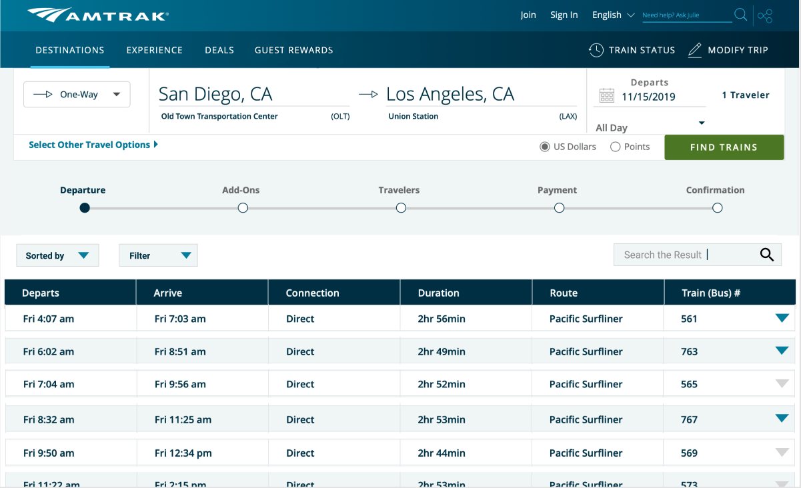
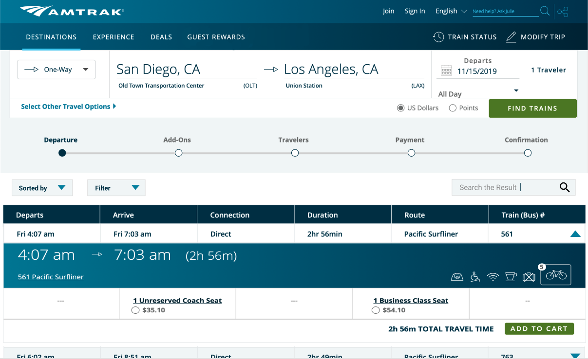
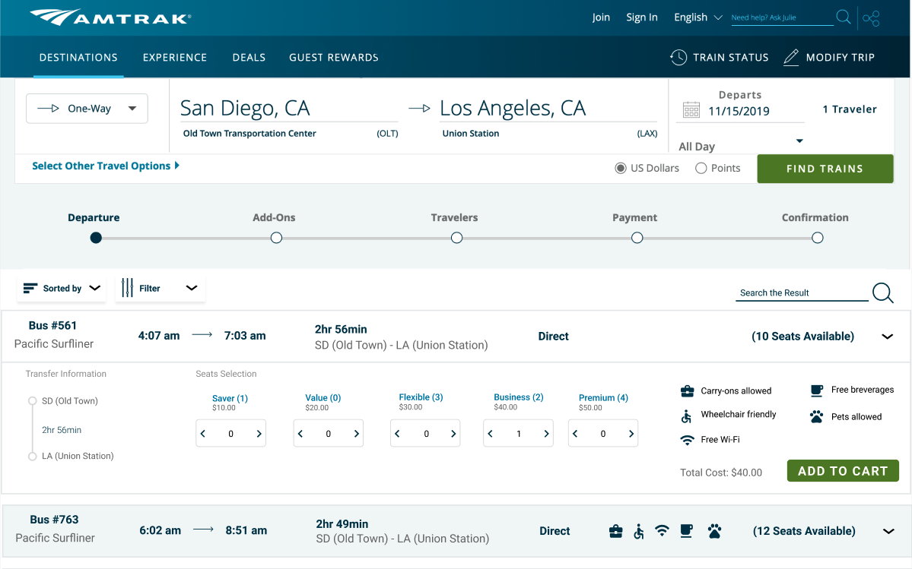

Amtrak is a train transportation service used in the United States. It has been in operation since 1971 and is still used highly today at
roughly 30 million people a year. It is used for those that would like to travel short or medium distances across cities or states. It is more highly sustainable than
airlines or automobile, and creates roughly 3.4 billion in revenue.
As decent users of Amtrak for the means of transportation, my team of 4 decided to tackle issues we noticed with their website. From the whole website, we decided to
focused our efforts on the scheduling and booking information. We first started off with user testing by having the users try to book a ticket. We then condensed our
findings and also categorized them by Jakob Nielson's 10 usability heuristics. Afterwards, we
then identified what components we were redesigning and created 2 prototypes using Figma, one design that reuses existing assets and one that uses new assets.
This case study was great in helping me learn more about efficient display and structure of information. I learned how one can use drop down functions to make a page have
tons of information without cluttering. It allows for a user to traverse 1 less step to reaching their targeted information/page.
To understand how Amtrak was being used by users, we conducted user testing with a scenario regarding booking a ticket. We observed the users as they underwent the tasks and recorded their actions and opinions onto a document.
User Tasks:
Scenario: You are going on vacation to Los Angeles from San Diego on November 15th. Your hotel check in time is after 2 pm on that day.Observation Plan:
With the results recorded, we organized each users' information by briefly summarizing what went right and wrong, and labelled their top 3 usability errors according to Jakob Nielson's 10 Usability Heuristics.
User 1
What worked:
For this user, figuring out how to book a ticket from San Diego to LA proved to be an easy task as most travel sights operate in the same way.
What didn't worked:
Trying to figure out how to find the pet policy was difficult. The user thought that by proceeding to purchase a ticket, there would be an option to add pets,
however, there was no indication through the process so he had to backtrack his steps multiple times. The process took roughly 15 minutes to find out any
information about pet policies.
Top 3 Usability Errors:
User 2
What worked:
This user finished the first task (finding the pets’ policy) smoothly by using the search function. She was able to find the schedule of the train,
and go through the booking process in general.
What didn't worked:
The user was confused when searching for the schedule of the train in specific time interval. She cannot figure out the difference between “noon” and
“afternoon”. Although the user checked the pets’ policy, she did not know how to add the ticket for her pet when booking the ticket.
Top 3 Usability Errors:
User 3
What worked:
The user navigated around the site pretty smoothly when booking a ticket. She found the time she wanted quickly and knew what to fill out for reserving a ticket.
What didn't worked:
The user struggled when she was trying to find out what the pet policies were. She tried clicking on the bicycle add-on function and hoped that there were other
tabs that would open. She did not use the search bar to look for hidden information.
Top 3 Usability Errors:
User 4
What worked:
Main issue that occurred had to do with the pets situation. The user had an understanding that pets could get onboard, but when she tried to add a pet when booking
her ticket, she didn’t know where to add her pet and was confused, so she had to reread the policy and figure out why she couldn’t take her pet.
What didn't worked:
Main issue that occurred had to do with the pets situation. The user had an understanding that pets could get onboard, but when she tried to add a pet when booking her ticket, she
didn’t know where to add her pet and was confused, so she had to reread the policy and figure out why she couldn’t take her pet.
Top 3 Usability Errors:
One component to redesign is the pets indication on the Amtrak website, specifically the consistency in iconography on the booking list, and the indication of pets on the “Add Bicycle, Pets, and Golf Clubs” page. On the booking list, in terms of pets, there are 3 possible indicators: no indicator, a crossed out pet icon, and a pet icon with a number next to it. When traveling from San Diego to Los Angeles, there is no pet icon listed, only bikes. So does that mean pets aren’t allowed? What’s the difference between no icon versus a crossed out icon? On the “Add Bicycle, Pets, and Golf Clubs” page, it is the same case where there are 3 possible indicators. When booking a ticket, there was a lot of confusion as to where to add your pet, and whether they could be let on. There needs to be better consistency and indication as to what is allowed or not.
Another component to redesign is the booking list due to the fact that during task 2, there were users that used the schedules page, and users who used the booking list. For the users who used the schedules page, they plugged in essentially the same information used for the booking list to look at the train numbers, and their departure and arrival times. They then used that information in the booking list to book a ticket. This ends up being extra steps. For the users who used the booking list, they bypassed the schedules page completely, making it useless. So the idea for the redesign is to combine the schedules and the booking list into one component. More specifically, have the booking list look more condensed like the schedules page that expands into more details of ticket choice, purchasing, and such.
 For redesign 1, we wanted to make a simple version by essentially merging the existing assets from the schedules page and the booking page together. It initially starts as the scheduling page, but has a drop down menu that reveals the booking information in an reorganized way compared to the original. Instead of the price and seat availability being separated, they are together. Instead of the "Add to Cart" button being at the top, which is not very normal in design, it is placed at the bottom where it usually is in typical websites. In addition, for faster usability, filters were added to sort the booking options.
 For redesign 2, we made a complete restyling that would fit perfectly with Amtrak style. Following the same concept of merging the schedules page and booking page, the listings provide more streamline information in the order of bus number, time departure and arrival, total travel time, number of stops, availability of accessibilities, and amount of seats available. This allows for the user to immediately find additional information that they would need in comparison to the original and first redesign. Each listing then has a drop down function which provides more information in regards to seat availability, type, and pricing, with the ability to book the ticket.
